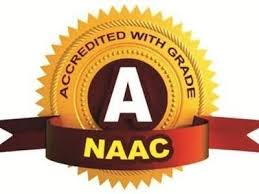

|
Nashik District Maratha Vidya Prasarak Samaj'sKarmaveer Adv. Baburao Ganpatrao Thakare College of EngineeringUdoji Maratha Boarding Campus, Near Pumping Station, Gangapur Road, NashikPermanently Affiliated to Savitribai Phule Pune University, Pune and Approved by AICTE, New Delhi |
 |